Un viaje guiado con Salesforce Data 360 para transformar la experiencia del huésped en Coral Cloud Resorts — desde datos fragmentados hasta segmentación inteligente, activación omnicanal con Marketing Cloud e IA embebida en cada paso del proceso.
Data StreamsData TransformsIdentity ResolutionCalculated InsightsSegmentationActivationAgentforce
Empezar
SOBRE CORAL CLOUD RESORTS
El reto y la transformación
Descubre cómo Coral Cloud Resorts usa Salesforce Data 360 y Agentforce para pasar de datos dispersos a experiencias de hospitalidad verdaderamente personalizadas.
🏖️
La experiencia de hospitalidad personalizada
Coral Cloud Resorts combina tecnología con hospitalidad de lujo. Sin embargo, toda la información de sus huéspedes (reservas, preferencias de spa, nivel de loyalty e interacciones de servicio) vive dispersa en múltiples sistemas sin comunicarse entre sí. Esto provocaba fricciones como enviar ofertas genéricas a huéspedes con quejas abiertas.
🔗
Unificación y Vista 360 del Huésped
Con Data 360, ingerimos y unificamos reservas, transacciones, soporte y comportamiento web bajo un solo perfil. Mediante Resolución de Identidad y Calculated Insights (como "propensión a upgrade" o "días desde la última estadía"), pasamos de datos aislados a una vista única y confiable.
🤖
Servicio Proactivo 24/7
Con datos unificados, desplegamos agentes autónomos con Agentforce. Si se detecta una reseña negativa o insatisfacción, se dispara un flujo de atención proactiva donde el agente conoce el contexto completo del huésped (historial, tier y preferencias) para resolverlo al instante.
🎯
Segmentación y Activación GenAI
El equipo de marketing puede lanzar campañas de alta precisión como "Summer Splash": un segmento de huéspedes con alta fidelidad que NO tienen casos de servicio abiertos. Mensajes hiperpersonalizados armados en minutos con herramientas GenAI.
Completa el formulario ingresando el Código de Evento (Event Code) proporcionado y tu correo electrónico. Haz clic en Enviar.
03
Inicio de Sesión
Al enviar la solicitud, verás una ventana emergente con un botón para acceder directamente a tu org de Salesforce.
04
Acceso Permanente
Tus credenciales también serán enviadas a tu correo electrónico para que puedas ingresar en cualquier momento desde login.salesforce.com.
EJERCICIO 1
1
Unificar Casos de Soporte con el Modelo Customer 360
¿Qué vamos a hacer? — Actualmente, cuando un cliente abre un ticket de soporte en Service Cloud, sus casos viven aislados de sus interacciones en tienda física, app móvil o e-commerce. En este ejercicio vas a conectar la fuente de casos de servicio (Cases de Service Cloud) a Data 360 para asociar cada reporte de soporte directamente con la identidad única de ese cliente (Individual).
⚠️
El Problema de Negocio
El Problema: Datos Aislados
Diferentes sistemas guardan la información del cliente de formas distintas (ej. "Surname" en S3 vs "LastName" en Service Cloud). Esto impide saber si una persona que compra en la web es la misma que tiene una queja abierta en atención al cliente.
🔧
La Solución Práctica
Lo que vas a construir hoy
Crearás un Data Stream desde Salesforce CRM para traer el objeto "Case", le asignarás la categoría de "Engagement" por fecha de creación, y mapearás sus campos (Contact ID y Status) con el modelo canónico "Individual".
🎯
Objetivos de Aprendizaje
Lo que vas a dominar
✓Navegar e interpretar el gráfico del Customer 360 Data Model (Profile vs Engagement).
✓Ingerir datos en tiempo real mediante conectores nativos de Data Streams.
✓Vincular transacciones y casos con el objeto "Individual" para lograr la vista 360 del cliente.
PASO A PASO
Ejecución del Ejercicio 1
Sigue los tres pasos prácticos para conectar los Casos de Soporte desde Service Cloud al modelo unificado. Haz clic en cada tarjeta para ver la guía detallada con imágenes.
🗂️
1
Explorar el Modelo de Datos
Navega al Data Model en Graph View, comprende la codificación por colores y localiza el objeto Individual como núcleo del Customer 360.
📥
2
Ingerir Casos desde Service Cloud
Crea un nuevo Data Stream desde Salesforce CRM → Case, configura la categoría Engagement con Created Date y despliégalo.
🔗
3
Mapear al Modelo Unificado
Vincula Contact ID → Individual y Status → Case Status en el Data Mapping, luego ejecuta Refresh Now para ingerir de inmediato.
EJERCICIO 2
2
Limpieza y Transformación de Datos con Data Transforms
¿Qué vamos a hacer? — Los datos que provienen de múltiples sistemas suelen llegar "sucios" o desestructurados. En este ejercicio vas a tomar los registros de huéspedes de Coral Cloud Resorts, separar sus números de teléfono (Móvil vs Casa), limpiar los caracteres no numéricos y formatearlos para almacenarlos en nuevos Data Lake Objects (DLOs) listos para usarse.
📞
El Problema de Negocio
El Problema: Teléfonos desestructurados
Los teléfonos de los huéspedes vienen formateados de formas inconsistentes (ej. '+1 (555) 019-2831' frente a '5550192831') y mezclan números de casa con celulares en un mismo campo.
🔧
La Solución Práctica
Lo que vas a construir hoy
Crearás dos DLOs de destino (Guest Mobile Phone Numbers y Guest Home Phone Numbers) y desplegarás un flujo de Data Transform desde un Data Kit que limpiará caracteres especiales, generará una Primary Key única y separará los teléfonos.
🎯
Objetivos de Aprendizaje
Lo que vas a dominar
✓Crear Objetos Data Lake (DLO) a partir de paquetes empaquetados (Data Kits).
✓Construir e interpretar flujos gráficos de transformación (Data Transforms) con nodos de Split y Clean.
✓Generar llaves primarias únicas concatenando campos y ejecutar transformaciones en lote.
PASO A PASO
Ejecución del Ejercicio 2
Sigue los dos pasos prácticos para crear los DLOs de destino y ejecutar el Data Transform de limpieza y separación de teléfonos.
🗄️
1
Crear Objetos Data Lake (DLOs)
Genera los dos DLOs de destino (Guest Mobile y Guest Home Phone Numbers) desde el Data Kit CoralCloud2.
⚙️
2
Crear y Ejecutar el Data Transform
Despliega el flujo "Format Guest Phone Numbers" desde el Data Kit, analiza los nodos Split/Clean y ejecútalo con Run Now.
EJERCICIO 3
Unificación de Perfiles con Identity Resolution
Cuando un mismo huésped se registra en el hotel como "Sofia Rodriguez" desde la app y como "S. Rodriguez" en el sistema de reservas con correos similares, el sistema crea registros duplicados. En este ejercicio exploraremos cómo las Reglas de Coincidencia (Match Rules) y Reconciliación (Reconciliation Rules) unifican esos registros dispersos en un solo perfil consolidado (Unified Individual) y utilizaremos Data Explorer para validar el "antes y después".
👥
El Problema de Negocio
El Problema: Registros Duplicados
Una misma persona puede figurar múltiples veces en distintas bases de datos con variaciones en su nombre o correo. Esto impide reconocer su historial total y genera comunicaciones redundantes o contradictorias.
🔀
La Solución Práctica
Lo que vas a explorar hoy
Revisarás las reglas de coincidencia difusa (Fuzzy Match) y de reconciliación en la pestaña Identity Resolutions. Luego, consultarás la tabla "Individual" en Data Explorer para ver los registros duplicados de "Sofia Rodriguez" y verificarás cómo se consolidan en una sola entrada en "Unified Individual".
🎯
Objetivos de Aprendizaje
Lo que vas a dominar
✓Comprender la diferencia entre Match Rules (coincidencias) y Reconciliation Rules (selección del mejor dato).
✓Interpretar métricas de resolución de identidad (porcentaje y total de registros consolidados).
✓Usar Data Explorer para filtrar, personalizar columnas y comparar el objeto de origen (Individual) frente al perfil unificado (Unified Individual).
PASO A PASO
Ejecución del Ejercicio 3
Sigue los dos pasos para inspeccionar las reglas de Identity Resolution y validar la unificación de perfiles en Data Explorer.
🔗
1
Explorar la Configuración de Identity Resolution
Revisa las Match Rules y Reconciliation Rules del Ruleset Unified Guests y analiza sus métricas de consolidación.
🔍
2
Consultar Individual vs Unified Individual en Data Explorer
Filtra por "Rodriguez" en el objeto Individual y comprueba cómo el objeto Unified Individual los consolida en un único perfil 360.
EJERCICIO 4
Métricas Avanzadas con Calculated Insights y Enriquecimiento CRM
Con los datos unificados bajo "Unified Individual", ahora podemos calcular métricas complejas a nivel de cliente. En este ejercicio calcularás el Lifetime Value (LTV) agregando más de 100M de registros de cargos de habitación. Posteriormente, incrustarás estas métricas y la actividad unificada directamente en la vista de Contactos de Salesforce mediante Lightning App Builder.
📊
El Problema de Negocio
El Problema: Métricas Fragmentadas y Manuales
Calcular el LTV o la actividad total de un huésped requiere cruzar manualmente tablas masivas de múltiples sistemas (S3, Service Cloud, POS). Esto hace imposible que un agente o ejecutivo de ventas conozca en tiempo real el valor real del cliente.
⚡
La Solución Práctica
Lo que vas a construir hoy
Crearás un Calculated Insight (LTV) mediante un Join entre "Unified Individual" y "Room Charges". Luego, editarás la página del Contacto en el CRM para arrastrar componentes Lightning de Data 360 (Profile Engagements e Insights), permitiendo al usuario ver el valor acumulado e historial sin salir del CRM.
🎯
Objetivos de Aprendizaje
Lo que vas a dominar
✓Crear Calculated Insights a partir de Data Kits para procesar grandes volúmenes de datos.
✓Entender los Joins con Unified Individual Link para calcular agregaciones sobre la persona unificada y no sobre duplicados.
✓Usar App Builder para incrustar componentes nativos de Data 360 (Insights y Engagement) en Salesforce CRM.
PASO A PASO
Ejecución del Ejercicio 4
Sigue los dos pasos para calcular el Lifetime Value mediante Calculated Insights y visualizarlo directamente en el perfil del Contacto en Salesforce CRM.
📊
1
Crear un Calculated Insight (LTV)
Genera el insight Lifetime Value desde el Data Kit, configura el Join con Unified Individual Link y publiícalo para procesarlo sobre más de 100M de registros.
⚡
2
Visualizar el Perfil Unificado en Salesforce CRM
Edita la página del Contacto con App Builder para incrustar los componentes Profile Engagements e Insights y verificar el LTV calculado en tiempo real.
EJERCICIO 5
Segmentación de Audiencias con Generative AI (Einstein) y Reglas Complejas
Coral Cloud Resorts ha remodelado su club infantil (KIDS Camp) y necesita reconectar con familias que hayan visitado el resort con más de dos niños en el último año. En este ejercicio construirás un segmento objetivo combinando Inteligencia Artificial Generativa (Einstein) para la regla inicial y luego el Segment Builder para filtrar por actividad web reciente y excluir a clientes con reclamos de soporte abiertos.
🎯
El Problema de Negocio
El Problema: Campañas Masivas Ineficientes
Lanzar promociones a toda la base de datos desperdicia presupuesto y molesta a los clientes. Promocionar el KIDS Camp a huéspedes sin hijos o venderle un upgrade a alguien con un reclamo de soporte abierto destruye la experiencia de marca.
🤖
La Solución Práctica
Lo que vas a construir hoy
Generarás un segmento inicial usando prompts de lenguaje natural en Einstein ("huéspedes de los últimos 6 meses con más de 2 hijos"). Luego, en el Segment Builder, agregarás condiciones para incluir quienes visitaron la web este año y excluirás casos de soporte que NO estén cerrados.
⚡
Objetivos de Aprendizaje
Lo que vas a dominar
✓Crear segmentos con Inteligencia Artificial Generativa a partir de prompts en lenguaje natural.
✓Recalcular métricas de población (Count Population) y refinar reglas de inclusión/exclusión.
✓Usar atributos relacionados (Website Engagement y Cases) para proteger la experiencia del cliente.
PASO A PASO
Ejecución del Ejercicio 5
Sigue los dos pasos para construir el segmento KIDS Camp con Einstein y refinarlo en el Segment Builder añadiendo filtros de actividad web y exclusión de soporte.
🤖
1
Crear un Segmento con Generative AI (Einstein)
Genera la audiencia inicial usando un prompt en lenguaje natural sobre Unified Individual y mide la población con Count Population.
🔧
2
Refinar el Segmento en el Visual Segment Builder
Agrega filtros de Website Engagement en Include y excluye clientes con Cases no cerrados, luego publica el segmento final.
EJERCICIO 6
Activación Omnicanal en Marketing Cloud Advanced con IA Generativa
La activación es el proceso mediante el cual una audiencia calculada en Data 360 se materializa y se envía a plataformas de ejecución para comunicarse con el cliente. En este ejercicio conectarás el segmento del KIDS Camp creado en el ejercicio anterior a Marketing Cloud Advanced, diseñando un flujo omnicanal (Email y SMS) impulsado por IA Generativa.
📢
El Problema de Negocio
El Problema: Desconexión entre Datos y Ejecución
Tener datos limpios y segmentos perfectos no sirve de nada si lleva semanas redactar contenidos, diseñar los flujos de correo y sincronizar las audiencias manualmente con las herramientas de marketing.
🚀
La Solución Práctica
Lo que vas a construir hoy
Navegarás a Marketing Cloud Advanced, redactarás un Campaign Brief en lenguaje natural para que la IA diseñe el mapa de campaña (3 emails y 2 SMS), y vincularás el segmento unificado de Data 360 como el disparador automático de la campaña.
🎯
Objetivos de Aprendizaje
Lo que vas a dominar
✓Comprender el concepto y valor de la Activación de Audiencias desde Data 360.
✓Generar flujos y borradores de contenido omnicanal (Email + SMS) mediante IA Generativa en Marketing Cloud Advanced.
✓Conectar segmentos unificados a triggers de journeys automáticos en tiempo real.
PASO A PASO
Ejecución del Ejercicio 6
Sigue los dos pasos para acceder a Marketing Cloud Advanced y crear una campaña omnicanal con IA Generativa vinculada al segmento del KIDS Camp.
🧭
1
Acceder a Marketing Cloud Advanced
Navega desde el App Launcher a la aplicación Marketing (no Marketing CRM Classic) y accede a la página de inicio de Marketing Cloud Advanced.
🤖
2
Crear una Campaña con IA y Activar el Segmento
Usa Draft with Agentforce para generar el Campaign Brief, define la secuencia "3 emails + 2 SMS" y vincula el segmento KIDS Camp de Data 360 como trigger.
Conclusión
Del dato fragmentado a la experiencia accionable
Este workshop recorrió el ciclo completo de Salesforce Data 360: desde la ingesta hasta la activación omnicanal. El resultado es una vista única, inteligente y activable del huésped de Coral Cloud Resorts.
Exercise 1 — Data Streams
Todas las fuentes de Coral Cloud Resorts (reservas, spa, loyalty, soporte) integradas en una plataforma centralizada en tiempo real.
Exercise 2 — Data Transforms
Datos limpios, normalizados y estructurados — listos para análisis confiable sin intervención manual.
Exercise 3 — Identity Resolution
Cada huésped de Coral Cloud Resorts tiene ahora un único perfil canónico, independientemente de cuántos canales use.
Exercise 4 — Calculated Insights
LTV, recencia, categoría preferida y frecuencia de compra disponibles en tiempo real en cada perfil.
Exercise 5 — Segmentation
Audiencias altamente precisas construidas sin código sobre datos reales y actualizados continuamente.
Exercise 6 — Activation
El gap data-to-action cerrado: segmentos activados en Marketing Cloud para campañas hiperpersonalizadas omnicanal.
¡Felicitaciones por completar el taller!
Has recorrido con éxito todo el ciclo de vida de los datos: desde la ingesta con Data Streams y limpieza con Data Transforms, hasta la unificación de perfiles, métricas de LTV, segmentación con IA Generativa y activación de campañas omnicanal.
Dirígete a Data 360 buscando "Data Cloud" en el App Launcher (icono de 9 puntos en la esquina superior izquierda).
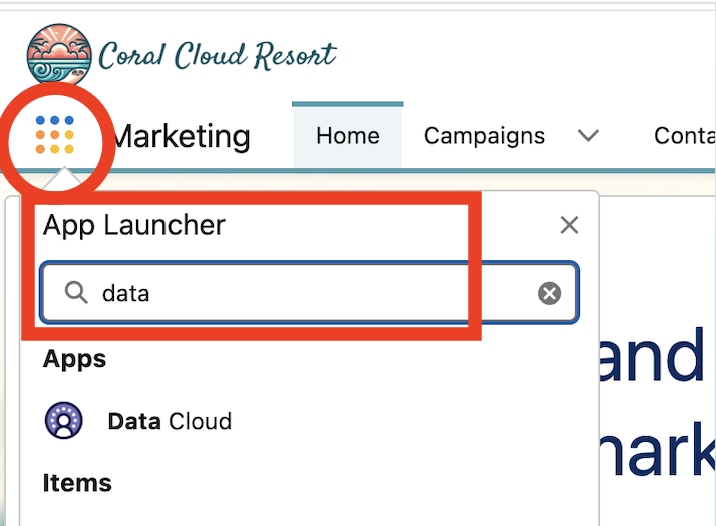
2
Haz clic en la pestaña "Data Model". Por defecto verás la vista de lista.
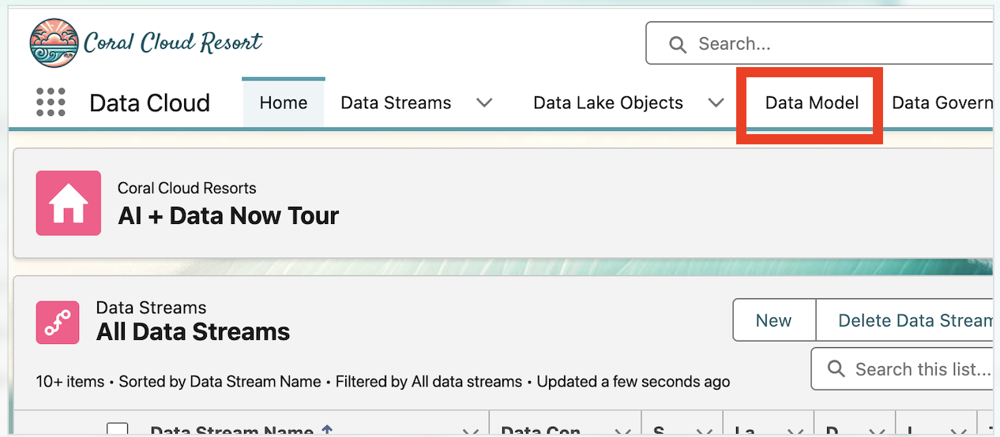
3
Cambia la vista a "Graph View" (Vista de Gráfico) usando el selector en la esquina superior derecha.
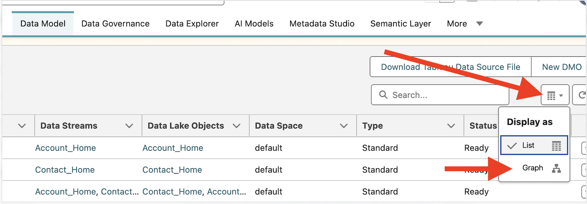
4
Analiza la codificación por colores del gráfico:
Profile — Datos de consumidores, empresas o listas de clientes.
Engagement — Datos basados en eventos/tiempo (compras, tickets, clicks).
Other — Datos complementarios (productos, tiendas, vehículos).
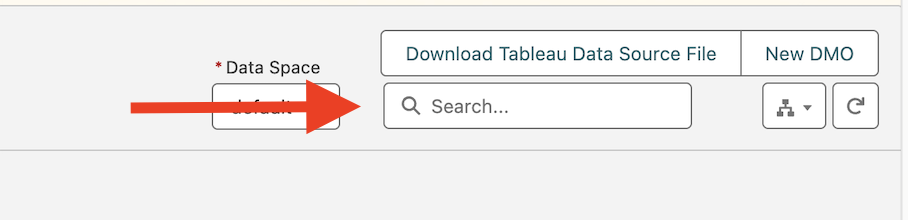
5
En el buscador superior derecho, escribe "Individual" para filtrar el gráfico.
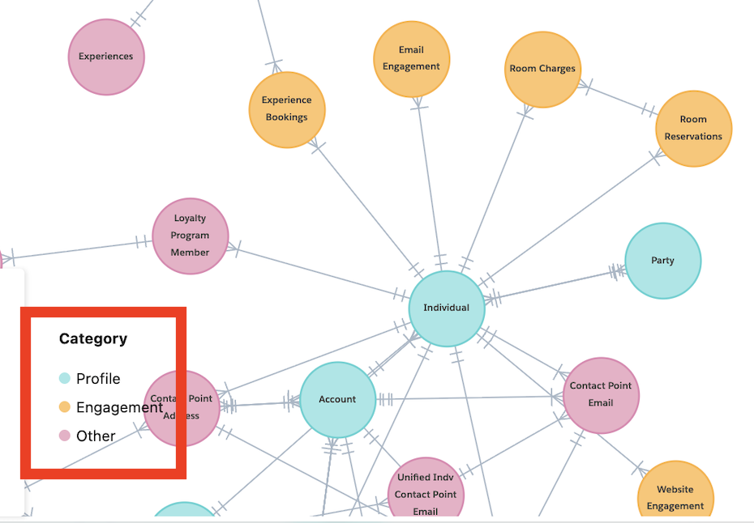
6
Observa la relación entre "Individual" (datos origen de cada fuente) y "Unified Individual" (vista unificada del cliente entre todas las fuentes).
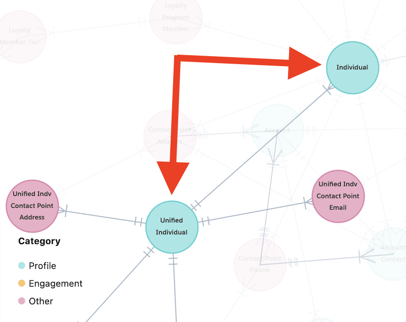
Paso 2 · Ejercicio 1
Ingerir Casos de Soporte desde Service Cloud
Creación del Data Stream para el objeto Case
1
Abre la sección "Data Streams" en una nueva pestaña y haz clic en el botón "New" en la parte superior derecha.
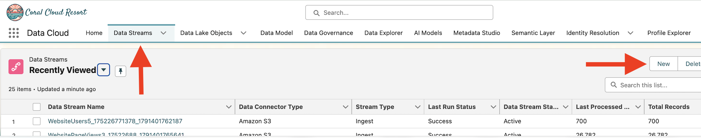
2
En la ventana del asistente para nuevo Data Stream, selecciona "Salesforce CRM" como fuente de datos y haz clic en "Next".
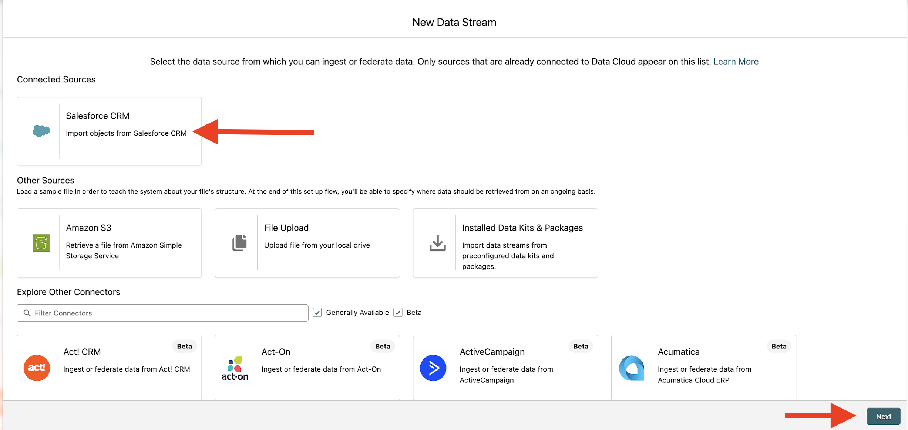
3
En el siguiente paso, haz clic en la pestaña "All Objects". Busca el objeto "Case", selecciónalo y haz clic en "Next".
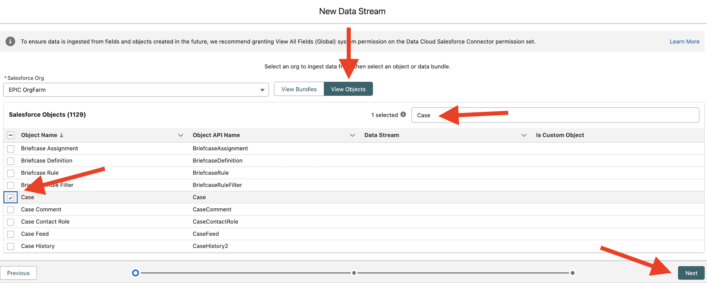
4
Mantén los campos del Case seleccionados por defecto y avanza. En la pantalla de configuración de categoría:
Selecciona Category: "Engagement".
En Event Time Field selecciona "Created Date" (el momento en que se creó el ticket de soporte).
Haz clic en "Next".
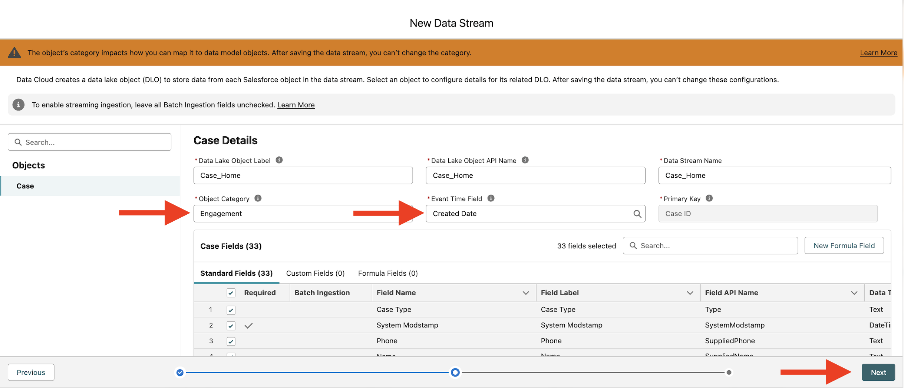
5
En la última ventana de diálogo, deja el Data Space por defecto y haz clic en "Deploy".
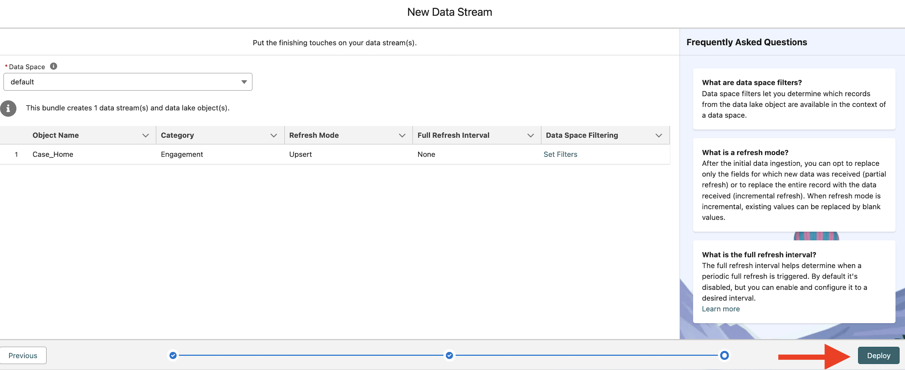
Paso 3 · Ejercicio 1
Mapear los Datos al Modelo Customer 360
Vinculación de campos con Individual y Case Status
1
Una vez desplegado el Data Stream, el navegador cargará la página de resumen del objeto (Case_Home). En el panel "Data Mapping", haz clic en el botón "Start".
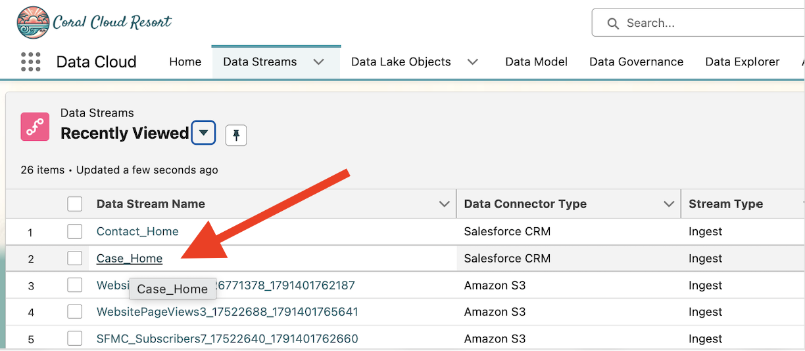
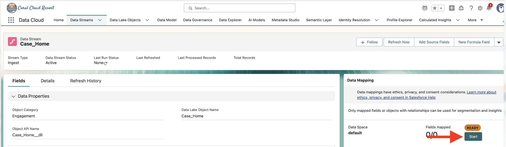
2
En la pantalla de mapeo (con el origen a la izquierda y el destino a la derecha), haz clic en "Select Objects" en el lado del destino.
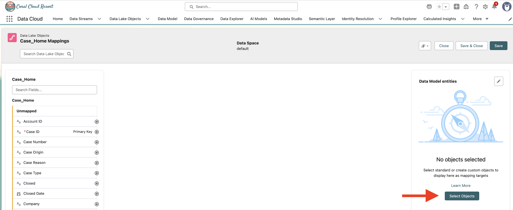
3
En el cuadro de diálogo, busca y selecciona el objeto "Case". Haz clic en "Done" para aplicar el mapeo preliminar.
💡 Einstein sugiere automáticamente los mapeos de campos — observa las sugerencias antes de confirmar.
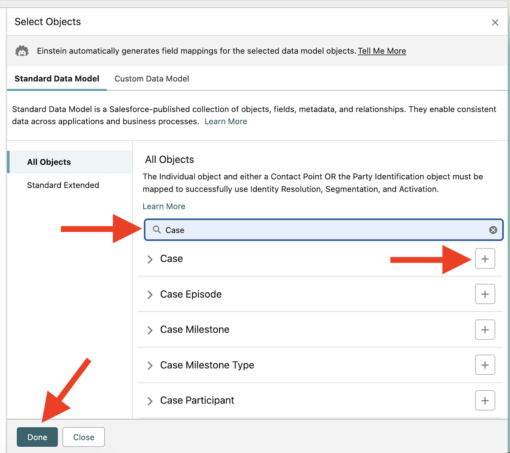
4
Mapear la Identidad del Cliente: En la columna izquierda (DLO), selecciona el campo "Contact ID". En el panel derecho (Data Model entities), busca y selecciona "Individual" para establecer la relación.
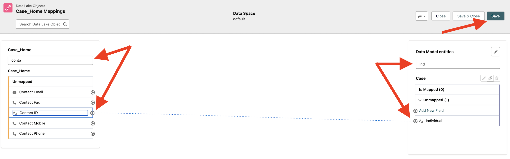
5
Mapear el Estado del Caso: De forma similar, busca "Case Status" en las entidades del modelo. Conecta el campo "Status" del DLO izquierdo con "Case Status" en la columna derecha.
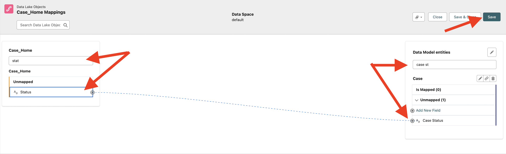
6
Revisa que las asignaciones coincidan con la vista previa y haz clic en "Save & Close" para guardar el mapeo.
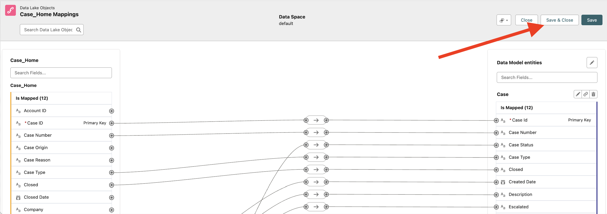
7
De regreso en la vista de detalle del Data Stream, haz clic en el botón "Refresh Now" para ejecutar la ingesta inmediata de los datos de soporte hacia Data 360.
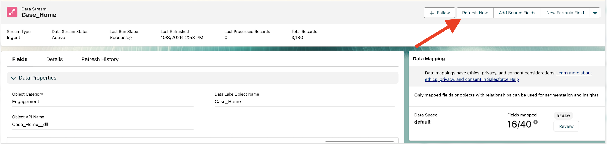
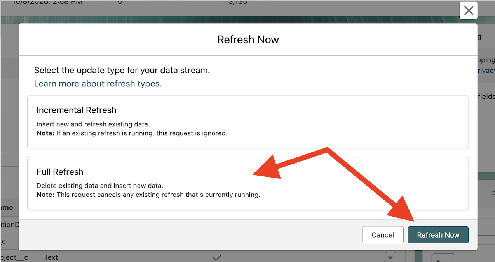
Ejercicio 2 · Paso 1
Crear Objetos Data Lake (DLOs) de Destino
1
Crear nuevo DLO desde el menú
En Data Cloud Setup, navega a Data Lake Objects. Haz clic en New Data Lake Object para iniciar la creación del primer objeto de destino.
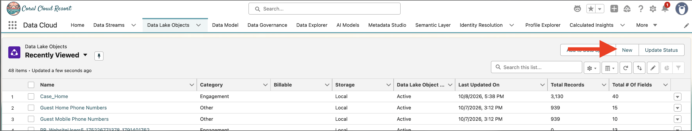
2
Seleccionar origen: "Create from Data Kit"
En el diálogo de creación elige la opción Create from Data Kit. Esto te permitirá importar la definición del DLO directamente desde el Data Kit CoralCloud2 que ya está instalado.
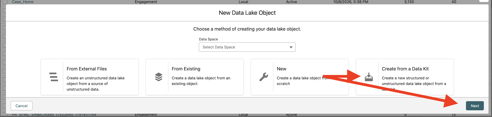
3
Seleccionar "Guest Mobile Phone Numbers"
En el listado del Data Kit busca y selecciona Guest Mobile Phone Numbers. Este DLO almacenará los números de teléfono móvil limpios y formateados de los huéspedes.
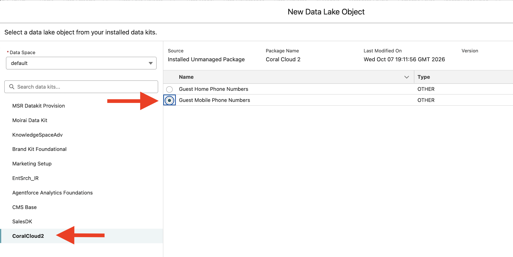
4
Configurar y guardar el DLO Mobile
Revisa el nombre y la clave primaria del objeto. Confirma que el Category sea Engagement y haz clic en Save. Repite el flujo para crear el segundo DLO.
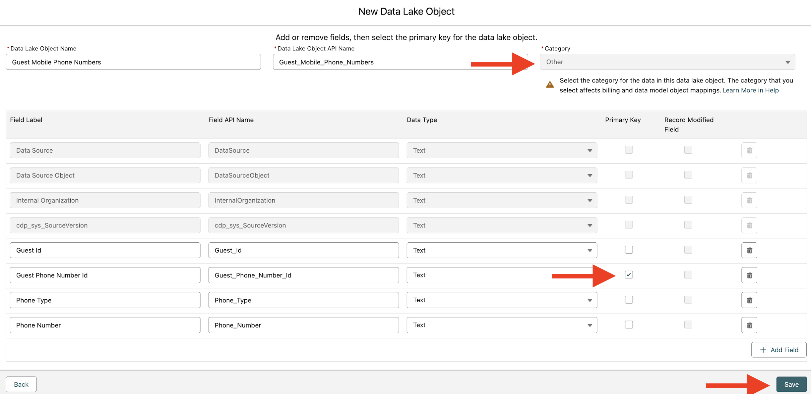
5
Configurar y guardar el DLO Home Phone
Siguiendo el mismo proceso, selecciona Guest Home Phone Numbers del Data Kit, verifica la configuración y haz clic en Save. Ahora tienes los dos DLOs de destino listos para recibir los datos del Transform.
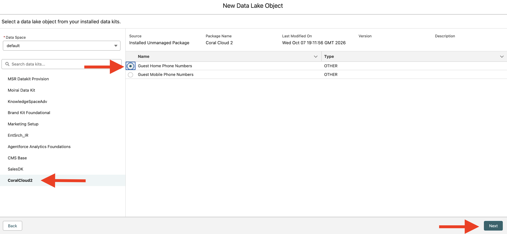
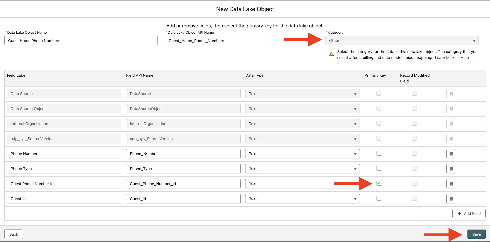
Ejercicio 2 · Paso 2
Crear y Ejecutar el Data Transform
1
Crear nuevo Data Transform
En Data Cloud Setup, navega a Data Transforms. Haz clic en New Data Transform para iniciar el asistente de creación del flujo de transformación.
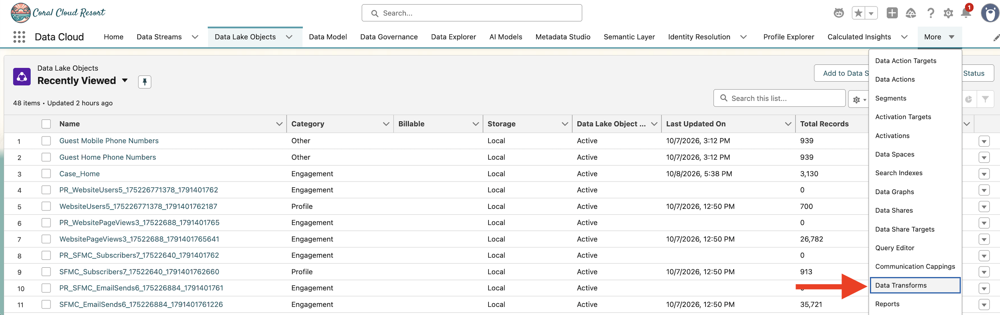
2
Seleccionar "Create from Data Kit"
En el diálogo de selección elige Create from Data Kit. Esto cargará los Data Transforms preconfigurados incluidos en el Data Kit CoralCloud2.
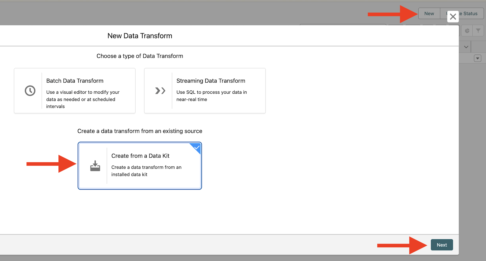
3
Seleccionar "Format Guest Phone Numbers"
Del listado del Data Kit selecciona el transform Format Guest Phone Numbers. Este flujo contiene la lógica de limpieza, validación y separación de números móviles y fijos ya configurada.
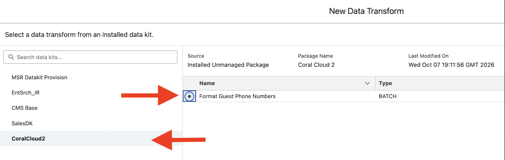
4
Explorar el canvas del Transform
El canvas muestra el flujo completo: nodo de entrada (DLO fuente), nodos de Split y Clean/Format para separar móviles de fijos, y los nodos de salida hacia los DLOs de destino que creaste en el Paso 1.
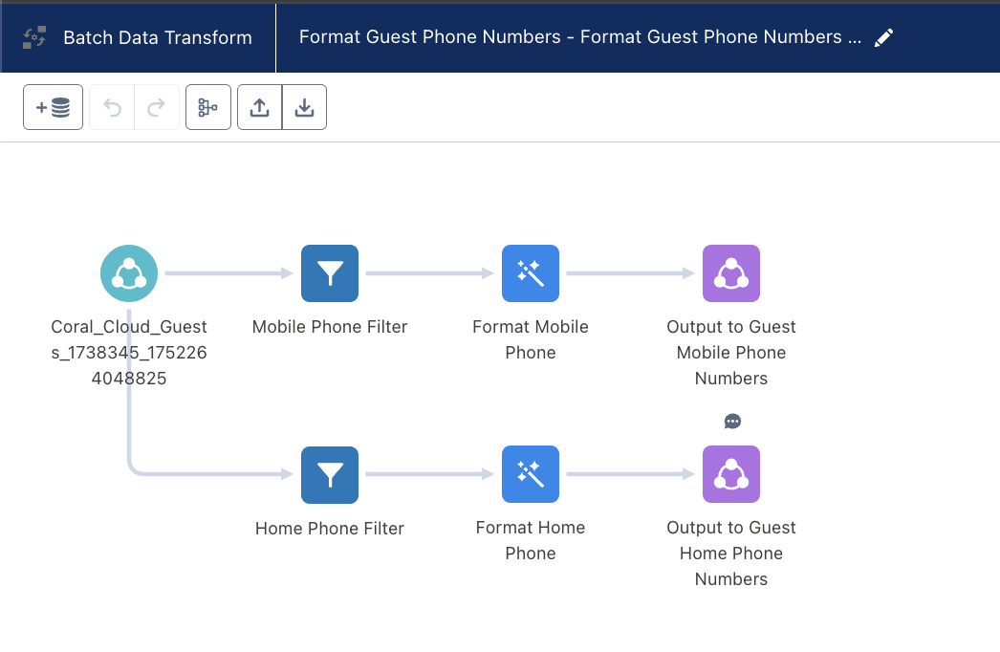
5
Inspeccionar el nodo "Format Mobile"
Haz clic en el nodo Format Mobile Phone para ver su configuración. Observa las fórmulas de limpieza que eliminan caracteres especiales y aplican el formato E.164 a los números móviles.
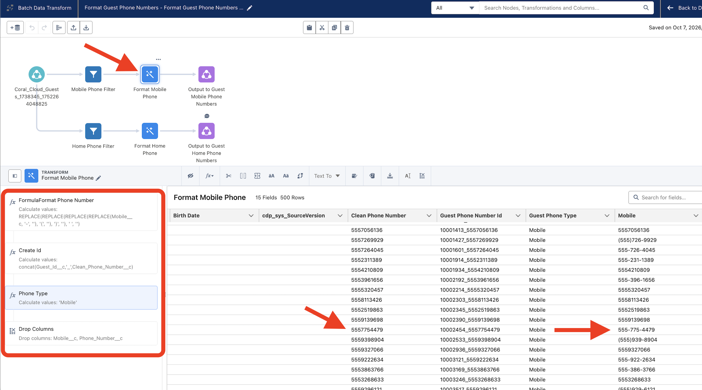
6
Revisar el nodo de salida (Output)
Abre el nodo Output y verifica que apunta al DLO de destino correcto (Guest Mobile Phone Numbers o Guest Home Phone Numbers). Confirma que el mapeo de campos sea el esperado.
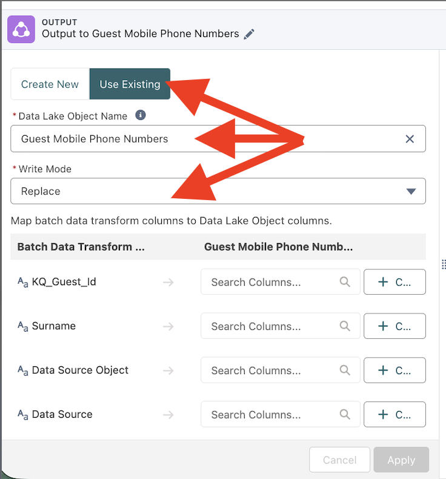
7
Guardar el Data Transform
Haz clic en Save en la barra superior del canvas para guardar todos los cambios. El transform queda en estado Draft hasta que se active y ejecute.
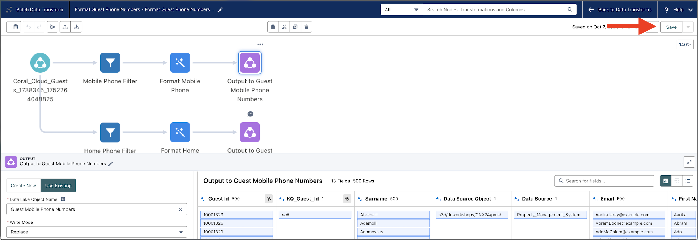
8
Volver al listado de Transforms
Regresa a la vista de listado haciendo clic en Back to Data Transforms. Verás el transform recién creado en la lista con su estado actualizado.
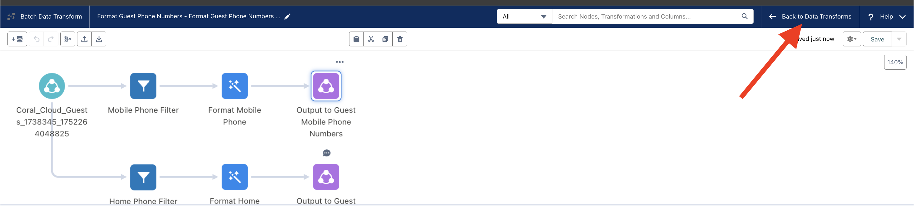
9
Ejecutar con "Run Now"
Desde el listado o la vista de detalle, haz clic en Run Now para lanzar la ejecución inmediata. En pocos minutos los DLOs de destino se poblarán con los números formateados y listos para segmentación.
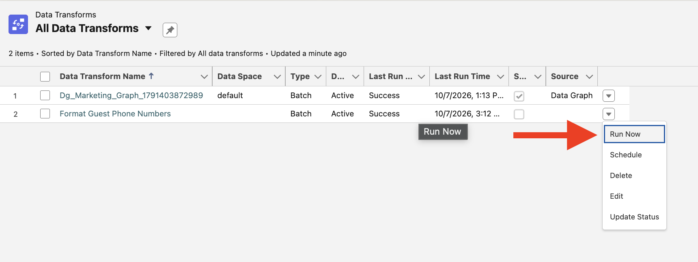
Ejercicio 3 · Paso 1
Explorar la Configuración de Identity Resolution
Revisión de Match Rules y Reconciliation Rules
1
Ir a la pestaña "Identity Resolutions"
Dentro de Data 360, dirígete a la pestaña Identity Resolutions. Si es necesario, cambia la vista a "All Identity Resolutions" para ver todos los Rulesets disponibles.
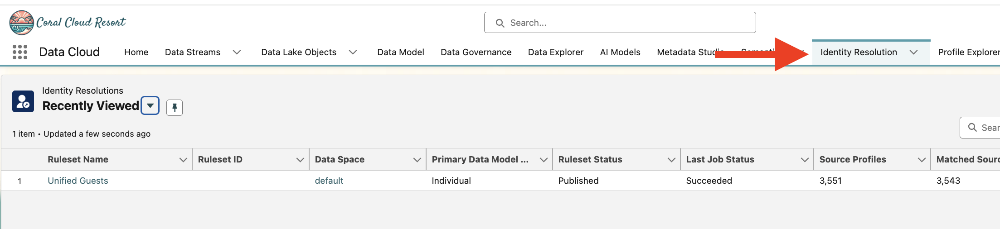
2
Abrir el Ruleset "Unified Guests"
Haz clic en el primer Ruleset, "Unified Guests", para abrir el detalle de su configuración y explorar las reglas que definen cómo se identifican y fusionan los perfiles duplicados.
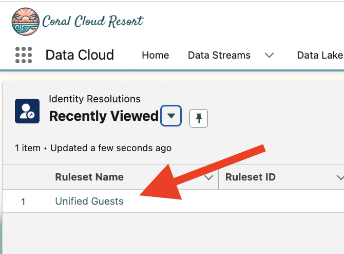
3
Examinar Match Rules y Reconciliation Rules
En la pestaña "Ruleset Properties", examina los dos componentes clave:
Match Rules: Definen los atributos para identificar duplicados (ej. Fuzzy match en Name y coincidencias normalizadas en Email).
Reconciliation Rules: Determinan qué valor conservar cuando hay datos en conflicto entre fuentes (ej. Most Frequent o Source Priority).
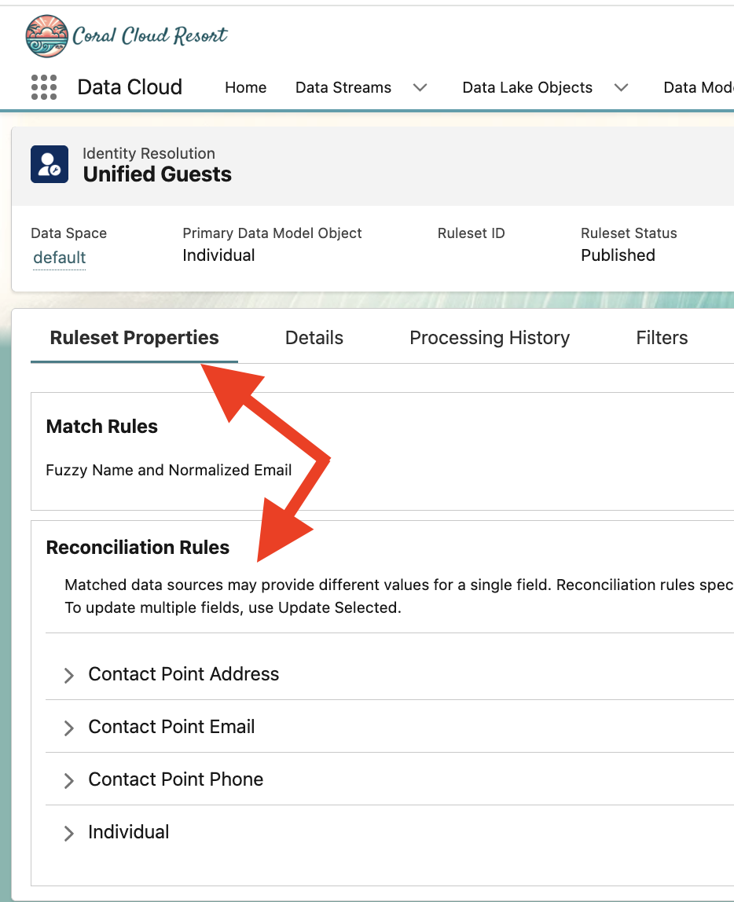
4
Observar métricas del Ruleset
Revisa la lista de reglas configuradas (Rulesets), sus atributos y los resultados del proceso: total y porcentaje de registros consolidados. Estas métricas muestran cuántos perfiles duplicados fueron identificados y fusionados.
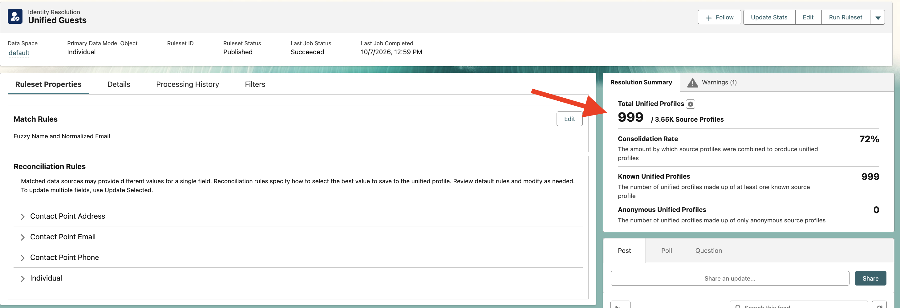
Ejercicio 3 · Paso 2
Consultar Individual vs Unified Individual en Data Explorer
Validación del perfil "Antes y Después" de la unificación
1
Ir a Data Explorer
Ve a la pestaña "Data Explorer". Asegúrate de mantener el Data Space por defecto para acceder a todos los objetos del modelo de datos.
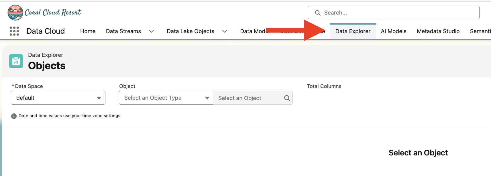
2
Seleccionar el objeto "Individual"
En el desplegable "Object", selecciona "Data Model Object". En el campo de búsqueda, escribe y selecciona "Individual" para consultar los registros de origen antes de la unificación.
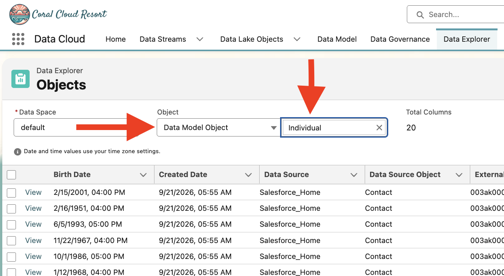
3
Configurar columnas visibles
Haz clic en "Edit Columns" y selecciona los campos: Individual Id, First Name, Last Name, Data Source y Birth Date. Haz clic en "Done" para aplicar la selección.
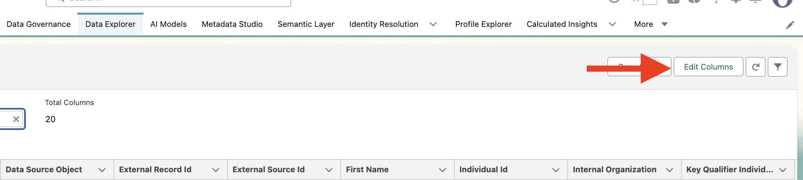
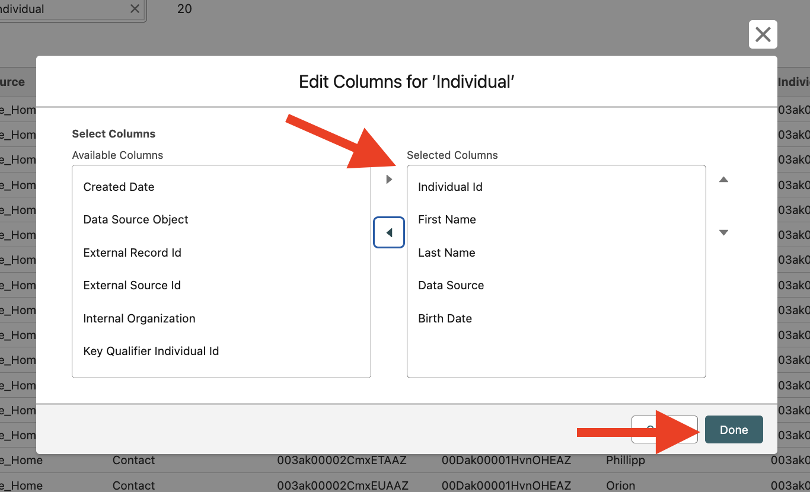
4
Filtrar por Last Name "Rodriguez"
Haz clic en el icono de filtro (esquina superior derecha) → "Add Filter" y configura:
Filter Field: Last Name
Operator: equals
Value: Rodriguez
Haz clic en "Done" y luego en "Apply".
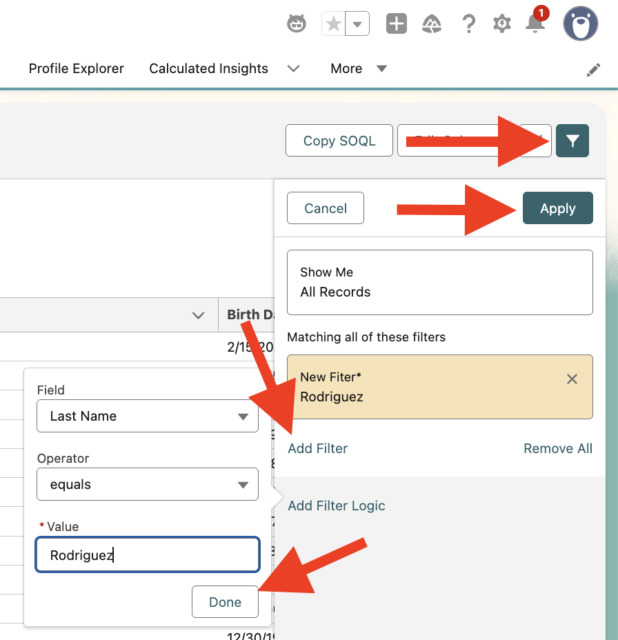
5
Observar múltiples registros en Individual
Revisa los resultados: verás múltiples registros para "Sofia Rodriguez". Cada fila representa una fuente de origen distinta que contribuye al perfil — este es el estado antes de la unificación.
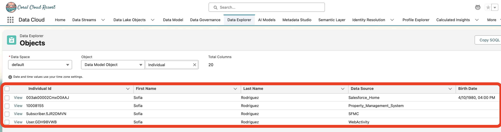
6
Cambiar al objeto "Unified Individual"
Borra la selección actual en la barra superior. Mantén "Data Model Object" y selecciona la entidad "Unified Individual" para consultar el estado después de la unificación.
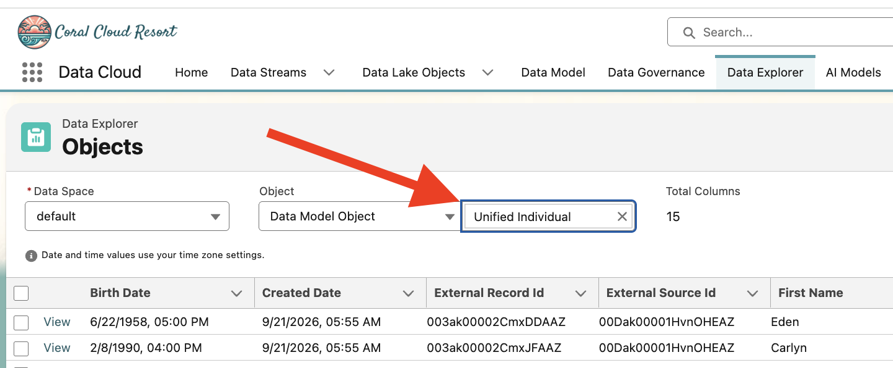
7
Verificar el perfil unificado
Aplica nuevamente el filtro "Last Name equals Rodriguez". Observa cómo ahora existe un único registro consolidado que representa el perfil 360 unificado de Sofia — todas las fuentes fusionadas en una sola identidad canónica.
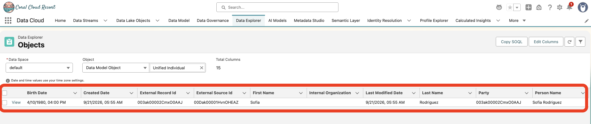
Ejercicio 4 · Paso 1
Crear un Calculated Insight (LTV) desde Unified Individual
Cálculo masivo de Lifetime Value y publicación de métricas
1
Ir a Calculated Insights y crear nuevo
Ve a la pestaña "Calculated Insights" y haz clic en "New" para iniciar el asistente de creación de un nuevo insight de métricas.
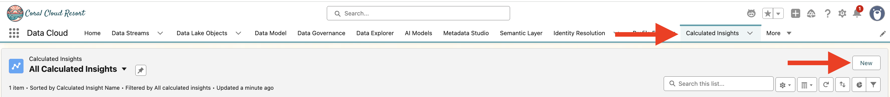
2
Seleccionar "Create from a Data Kit"
Selecciona "Create from a Data Kit" y haz clic en "Next" para importar la definición del Calculated Insight directamente desde el Data Kit instalado.
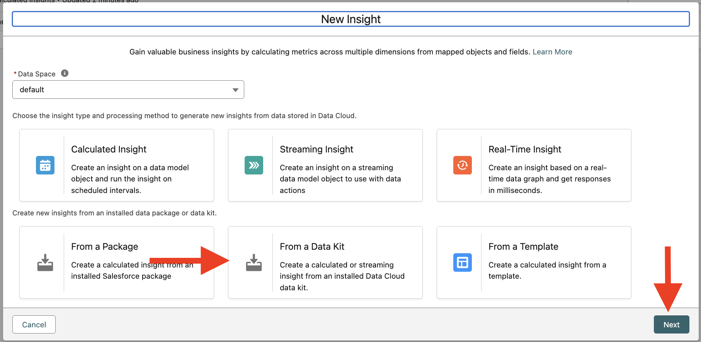
3
Seleccionar "Lifetime Value"
En el paquete instalado, selecciona "Lifetime Value" y haz clic en "Next" para ingresar al Visual Insights Builder con el flujo preconfigurado.
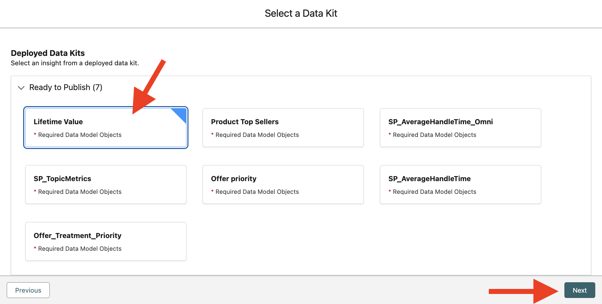
4
Revisar el nodo Join
En el lienzo visual, haz clic en "Join" junto al nodo Room Charges. Observa cómo el Join vincula Unified Individual mediante la tabla "Unified Individual Link" para sumar los cargos de todas las fuentes. Haz clic en "Apply".
5
Revisar el nodo Aggregate y guardar
Haz clic en el icono "Aggregate" del lienzo. Confirma que la métrica (Measure) LTV calcula la suma de los Room Charges y la dimensión es UnifiedGuest. Haz clic en "Apply" y luego en "Save and Run".
6
Nombrar y habilitar el insight
Asigna el nombre "Lifetime Value", avanza con "Next", establece el Schedule como "Not Scheduled" y haz clic en "Enable".
7
Publicar y revisar el SQL generado
Desde la vista de detalle, haz clic en "Publish Now". Revisa la pestaña "Expression" para ver el SQL generado automáticamente que respalda el cálculo del LTV.
8
Monitorear el estado de ejecución
En la lista de Calculated Insights, monitorea el "Last Run Status" hasta que cambie de Processing a Success. Puedes consultar los resultados desde Data Explorer filtrando por Calculated Insights.
Ejercicio 4 · Paso 2
Visualizar el Perfil Unificado en Salesforce CRM
Incrustar componentes de Data 360 en el registro de Contacto
1
Abrir la aplicación "Coral Cloud App"
Usa el App Switcher (9 puntos) para abrir la aplicación "Coral Cloud App".
2
Buscar el contacto "Sofia Rodriguez"
Ve a la pestaña "Contacts" y busca "Rodriguez". Haz clic en "Sofia Rodriguez" para abrir su detalle de registro.
3
Abrir el App Builder con "Edit Page"
En la esquina superior derecha, haz clic en el icono de Engranaje (Gear) y selecciona "Edit Page" para entrar al Lightning App Builder.
4
Arrastrar "Data Cloud Profile Engagements"
En la barra de componentes (izquierda), busca "Data Cloud". Arrastra "Data Cloud Profile Engagements" al lienzo debajo de la tarjeta del Contacto.
5
Configurar propiedades de Profile Engagements
En el panel derecho de propiedades, configura:
Match On: Contact ID
Data Space: default
Unified Individual DMO: Unified Individual
Unified Individual Link: Unified Link Individual
Haz clic en "Select…", pasa todos los DMOs a "Selected" y presiona "OK". Haz clic en "Save".
6
Arrastrar "Data Cloud Profile Insights"
Arrastra el componente "Data Cloud Profile Insights" al lienzo y colócalo entre la Contact Card y el componente de Engagements.
7
Configurar propiedades del Insight LTV
En el panel derecho, configura las propiedades:
Match On: Contact ID | Data Space: default
Unified Individual DMO: Unified Individual
Unified Individual Link: Unified Link Individual
Calculated Insight: Lifetime Value | Measure: ltv__c
Marca el checkbox "Format as Currency"
Haz clic en "Save".
8
Salir del App Builder
Haz clic en la flecha "Back" (esquina superior izquierda) para salir del App Builder y regresar a la vista del Contacto con los componentes ya embebidos.
9
Ver el resultado final en el CRM
En la vista del Contacto, ajusta el filtro de actividad a "Last 90 days" y presiona "Apply". ¡Ahora el usuario del CRM puede ver el LTV calculado y toda la actividad unificada en tiempo real, sin salir de Salesforce!
Ejercicio 5 · Paso 1
Crear un Segmento con Generative AI (Einstein)
Uso de prompts en lenguaje natural para la audiencia inicial
1
Ir a Segments y crear nuevo
Dirígete a la pestaña "Segments" (puede estar dentro del menú "More") y haz clic en "New" para iniciar el asistente de creación.
2
Seleccionar "Create with Einstein"
Selecciona "Create with Einstein", elige "Unified Individual" en el campo Segment On y haz clic en "Next". Confirma los avisos de GenAI haciendo clic en "Got It".
3
Ingresar el prompt en lenguaje natural
Ingresa el siguiente prompt: "Guests who checked in within the past 6 months and have more than two children" y presiona la flecha de envío para que Einstein genere las reglas del segmento.
4
Medir el tamaño inicial con "Count Population"
Haz clic en "Count Population" para calcular el tamaño inicial de la audiencia generada por Einstein.
5
Recalcular la población
Haz clic en "Recount Population" para actualizar el conteo. Verifica que el tamaño represente aproximadamente el 25% de la población total.
6
Pasar al constructor visual
Haz clic en "Edit Segment Rules" para pasar al Segment Builder visual donde refinarás las reglas con filtros adicionales.
Ejercicio 5 · Paso 2
Refinar el Segmento en el Visual Segment Builder
Filtros de actividad web y exclusión de casos de soporte abiertos
1
Explorar el lienzo del Segment Builder
En la pestaña "Include", revisa las reglas generadas por Einstein. Desde el panel izquierdo puedes acceder a Direct Attributes, Calculated Insights y Related Attributes.
2
Expandir "Website Engagement"
En la paleta izquierda, expande "Related Attributes" → "Website Engagement" para acceder a los atributos de actividad web del huésped.
3
Arrastrar "Engagement Date Time" a Include
Arrastra y suelta "Engagement Date Time" sobre la pestaña "Include" del lienzo para agregar la condición de actividad web.
4
Configurar la regla de actividad web
Configura la medición como: "Count At Least 1" donde Engagement Date Time es "This Year". Haz clic en "Done" y vuelve a calcular la población.
5
Ir a la pestaña "Exclude"
Haz clic en la pestaña "Exclude" (junto a Include) para configurar las exclusiones de la audiencia.
6
Arrastrar "Case Status" a Exclude
En Related Attributes, expande "Case" y arrastra el atributo "Case Status" a la pestaña Exclude para definir la regla de exclusión.
7
Configurar la exclusión de casos no cerrados
Configura la regla de exclusión:
Measurement: Count At Least 1
Operator: Is Not Equal To
Value: Escribe "Closed" y selecciónalo cuando aparezca
Esto excluirá a cualquier cliente que tenga casos de soporte abiertos o en proceso.
8
Recuento final y cerrar el builder
Haz clic en "Done" y ejecuta nuevamente el recuento de la audiencia para verificar el impacto de las exclusiones. Luego haz clic en "Done" para cerrar el Segment Builder.
9
Publicar el segmento
Desde la página de detalle del segmento, despliega el menú superior derecho y selecciona "Publish Now". El estado cambiará de Publishing a Success en pocos minutos.
Ejercicio 6 · Paso 1
Acceder a Marketing Cloud Advanced
Navegación a la aplicación de marketing de nueva generación
1
Abrir el App Launcher
Haz clic en el icono del App Launcher (9 puntos en la esquina superior izquierda).
2
Buscar y seleccionar la aplicación "Marketing"
En el cuadro de búsqueda escribe "Marketing" y selecciona la aplicación "Marketing". Asegúrate de NO seleccionar "Marketing CRM Classic".
3
Página principal de Marketing Cloud Advanced
Serás redirigido a la página de inicio de Marketing Cloud Advanced, donde podrás crear y gestionar campañas omnicanal impulsadas por IA.
Ejercicio 6 · Paso 2
Crear una Campaña con IA Generativa y Activar el Segmento
Diseño de un journey omnicanal y vinculación de la audiencia
1
Clic en "Draft with Agentforce"
Desplázate hacia la sección "Recently Activated Campaign Flows" y haz clic en "Draft with Agentforce".
2
Ingresar prompt en Agentforce
En el panel de Agentforce, ingresa la instrucción de la campaña:
"Create a marketing campaign to promote our new Kids Camp to prior guests with children during the off season"
y presiona enviar.
3
Revisar la Vista Previa / Preview
Agentforce desplegará una respuesta con los detalles generales de la campaña (Campaign Name: Kids Camp Enrollment Campaign, Flow Name & Type y Brand). Revisa la propuesta y haz clic en el botón "Preview" para abrir la pestaña de vista previa con el detalle de los mensajes y canales.
4
Revisar propuestas de contenido generadas
Observa las propuestas de contenido redactadas automáticamente para Email y SMS. Como puedes observar, en la primera interacción solo hay 3 emails y ningún SMS. En el siguiente paso vamos a pedirle a Agentforce que agregue 2 SMS al final.
5
Ajustar la secuencia con Agentforce
Pídele al agente que agregue SMS a la secuencia de correos de manera que queden 3 correos y luego 2 SMS. Puedes solicitarlo ingresando el prompt:
"Add the SMS steps to the campaign"
Verifica que, luego de ejecutar la instrucción, la secuencia incluya los 2 SMS adicionales como muestra la imagen y luego guarda la campaña.
7
Ir al registro de la Campaña
Desde la vista del Brief, dirígete a la pestaña Related para acceder al registro de la Campaña que Agentforce creó automáticamente. Una vez en la vista de la Campaña, procederemos a vincular el segmento unificado de Data 360.
8
Seleccionar el segmento de origen
En el registro de la campaña, haz clic en 'Select Segment' para vincular la audiencia de Data 360 que recibirá esta campaña.
9
Elegir "Select an Existing Segment"
En la ventana emergente, selecciona "Select an Existing Segment" para buscar el segmento creado en el Ejercicio 5.
10
Vincular el segmento generado en el ejercicio 5
Busca en el menú desplegable el segmento de Recent Guests with More Than Two Children creado y haz clic en 'Save'. ¡La campaña omnicanal queda vinculada a la audiencia unificada de Data 360!
11
Verificar la asociación del segmento en el flujo de la campaña
Confirma que el segmento Recent Guests with More Than Two Children haya quedado correctamente vinculado como el disparador (Start Trigger) dentro del flujo Kids Camp Off Season Promotion Flow. Con esto, la campaña omnicanal queda completamente configurada y lista para activarse con los datos unificados de Data 360.